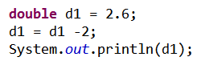

1. 8种基本数据类型
Java的数据类型可以分为两类：基本数据类型、引用数据类型。我们现在主要学习的是基本数据类型。
1.1. 整数类型
整数字面量（1和2 就是字面量）默认是 int 类型，如果不超出声明类型的范围, 则可以给小类型直接赋值。如：
如果超出了范围，则会编译出错：
使用整数类型(byte, short, int)要注意取值范围。
long 类型的字面量需要使用“L”、“l”后缀，如果值不超出int的范围，则没有问题，但是值超出了int的范围，这个值的必须使用“L”、“l”后缀，否则编译不通过。
1.2. 浮点类型
浮点类型是用来表示小数的类型。主要有两个，一个是单精度类型float，一个是双精度类型double。
float和int类型都是32位的，但是int 类型的数据能表示的范围比 float 类型小。
在把一个浮点型的数赋值给float类型的时候，必须在数值的后面加上“f”或“F”，否则编译出错。
加上“f”或“F”：
float虽然可以表示浮点数，但是，通常会使用double。而且浮点数的默认字面量是double类型的，可以在字面量后面添加“D”、“d”为后缀，也可以不加。
还要注意一点，使用浮点型进行计算，因为计算时会尽可能的精确，所以得到的结果可能不准确。

运行的结果是：
不是0.6。
1.3. 字符类型char
字符类型通常用于表示单个字符，字符常量必须使用单引号（''）括起来。在定义字符的时候，可以用一个字面量表示：
如果要表示一个单引号字符，如果直接使用就出出现问题，为了解决这个问题就出现了转义字符的概念。

常见的转义字符有：
转义字符 描述
\\ 反斜线
\" 双引号
\' 单引号
\b 倒退一格
\t 制表符Tab
\r 回车
\n 换行
字符类型是一个 16 位无符号整数, 是一个 2 进制数，这个数值是一个字符的 unicode 编码值。
unicode 编码，是全球范围内的编码方法， 编制了英文、中、日、韩、阿拉伯、希伯来等等共 8 万多个字符（unicode 编码在设计的时候就旨在能表示世界上所有文字）。
char 的范围 0~65535 不能表示全部 unicode，但是可以表示 unicode 最常用的部分，足够用的了。
Unicode 编码的英文部分与ASCII 码兼容（ASCII 表示的范围 0~128与Unicode只一样的）, 同时英文字符和数字是连续编码的。
一个 10 十制数 65 代表的字符就是大写字母 A：
也可以使用一个十六进制的数来表示一个字符：
1.4. boolean类型
boolean类型只有两个值：true和false。一般用于判断语句中。
2. 数据类型转换
Java程序中，不同的类型类型的值经常需要进行相互转换。
Java中有8中基本数据类型，其中有7种是数值类型。Java提供的这7种数值类型可以相互转换。如：把int类型数值转换成byte类型的数值，或者把int类型数值转换成double类型的数值。Java的数据类型转换有两种，一种是自动类型转换，另一种是强制类型转换。Java中所有的数值类型都可以进行类型转换。
2.1. 自动类型转换
自动类型转换是把存储范围小的类型的值赋值给存储范围大的类型的变量。就相当于有两个杯子，小杯子中装了水后，倒入大杯中，这是完全么有问题的。
Java支持的自动类型转换的方向如图 3.5.1所示：
图 3.5.1
箭头左边的类型的值可以赋值给箭头右边类型的变量。
现在我们来演示一下：
2.2. 强制类型转换
如果希望箭头右边类型的值赋值给左边类型的变量，则需要进行强制类型转换。也就是说强制类型转换是把存储范围大的类型的值赋值给存储范围小的类型的变量。
① 正常情况下
int a = 10;
byte b = a;//错误: 可能损失精度
System.out.println(b);
把int类型的值赋值给byte类型的变量，把类型范围大的值赋值给类型范围小的变量，需要进行强制类型转换，强制类型转换的语法是：(targetType)value，强制类型转换的运算符是圆括号。
byte b = (byte)a;
这是编译没有报错。运行得到的结果是10。
② 如果有一个double类型的值，要把它赋值给int类型的变量，会是什么样的？
double a1 = 12.123;
int b1 = (int) a1;
System.out.println(b1);//12
运行的结果是12。所以将一个浮点类型的数强制转换成int类型，Java会直接将浮点数的小数部分截断。所以得到的结果是12。这就是损失了数据的精确度。
③ 接下来，如果进行强制类型转换的值超过了它强转成的类型的范围，会怎么样呢？
int a2 = 129;
byte b2 = (byte) a2;
System.out.println(b2);//-127
这时候，运行的结果是-127。
进行强制类型转换的时候，类似于将大杯子中的水到如小杯子中，如果大杯子中的水不多还好，如果大杯子中的水很多，超过了小杯子的容量，则会溢出。强制类型转换也是同理，如果存储范围大的类型的值超过了储范围小的类型的变量的取值范围，也会引起溢出。这个例子就是典型的溢出。b2的结果是根据二进制的方式进行计算。
2.3. 表达式类型的自动提升
当一个算术表达式中包含多个基本类型的值时，整个算术表达式的数据类型都将进行自动提升。自动提升的规则是：
1) 所有的byte、short、char类型都将提升到int类型。
2) 整个算术表达式的数据类型自动提升到与表达式中最高等级操作数同样的类型。